AlphaNet-V3——调整网络结构和预测目标¶
在 AlphaNet-V1 加入多步长的特征提取层，将池化层替换为门控循环单元（GRU），并尝试预测收益率和超额收益的方向。最后将随机森林模型作为 baseline 进行比较。
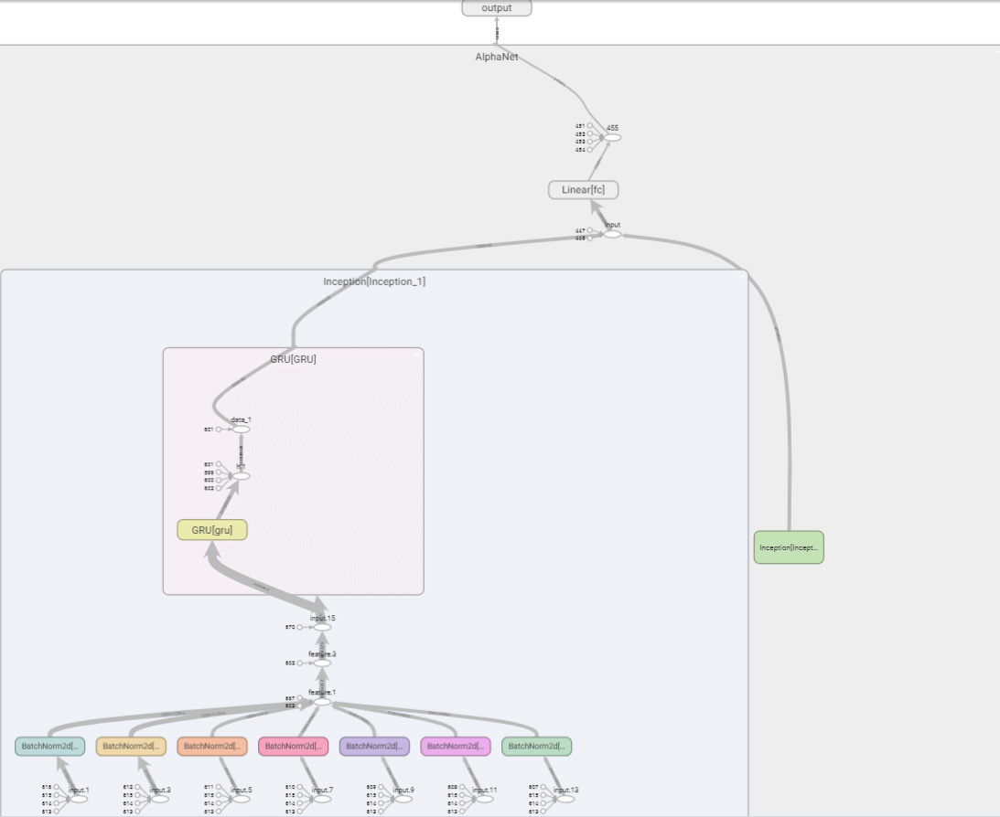
上一篇文章 中，我们构建了 AlphaNet-V1 模型，该模型使用固定步长stride=10进行自定义的特征提取（包括相关系数ts_corr、标准差ts_stddev等 7 个运算符函数），进行批标准化后进行最大、平均和最小池化，将特征提取层和池化层的输出展平后连接，最后经过一个全连接隐藏层输出收益率的预测值。
在实证检验后，我们发现 AlphaNet-V1 给出的标签预测值几乎都为常数，只在少部分样本点有突出值，这并不是一个理想的收益率预测值。因此，本文尝试对 AlphaNet-V1 进行两方面的改进：
- 调整网络结构。AlphaNet-V1 的网络结构较简单，我们将在 AlphaNet-V3 版本中加入不同步长
stride的特征提取层，并将现有的池化层转换为可以记忆时序信息的门控循环单元（GRU）。 - 调整标签值。AlphaNet-V1 预测的标签值是个股在未来 10 个交易日的收益率。我们将在 AlphaNet-V3 版本中将预测标签转换为涨跌方向（1 代表上涨，即收益率大于 0；0 代表不变或下跌，即收益率小于或等于 0）和超额收益方向（1 代表收益率大于当批的平均收益率，0 代表收益率小于或等于当批的平均收益率）。
搭建 AlphaNet-V3¶
加入多步长的特征提取层¶
AlphaNet-V1 的特征提取层中，固定步长stride=10，我们可以设定其他的步长，拓宽因子挖掘的可能性。
下面我们加入步长stride=3的特征提取层，仍使用 AlphaNet-V1 中的 7 个运算符函数。
由于步长发生变化，因此卷积操作的索引列表也发生了变化。我们需要生成两个不同的index_list，供两个步长不同的特征提取层使用。
# 根据输入的矩阵和卷积操作的步长，计算卷积操作的索引
def get_index_list(matrix, stride):
"""
args:
matrix: torch.tensor, the input matrix
stride: int, the stride of the convolution operation
return:
index_list: list, the index of the convolution operation
"""
W = matrix.shape[3]
if W % stride == 0:
index_list = list(np.arange(0, W + stride, stride))
else:
mod = W % stride
index_list = list(np.arange(0, W + stride - mod, stride)) + [W]
return index_list
# 根据输入的矩阵和卷积操作的步长，计算卷积操作的索引
# inception1 模块使用的卷积操作的步长为 10
index_list_1 = get_index_list(np.zeros((1, 1, 9, 30)), 10)
# inception2 模块使用的卷积操作的步长为 3
index_list_2 = get_index_list(np.zeros((1, 1, 9, 30)), 3)
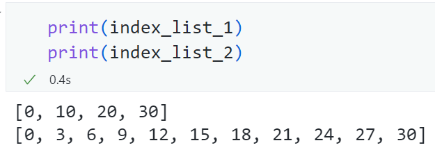
在 AlphaNet-V1 中，我们已经编写了Inception类，它可以接收不同的index_list作为参数，因此我们只需要传入index_list_2即可实现步长为stride=3的特征提取层。
class AlphaNet(nn.Module):
def __init__(
self, combination, combination_rev, index_list_1, index_list_2, fc_num
):
super(AlphaNet, self).__init__()
self.combination = combination
self.combination_rev = combination_rev
# 自定义的 Inception1 模块
self.Inception_1 = Inception(combination, combination_rev, index_list_1)
# 自定义的 Inception2 模块
self.Inception_2 = Inception(combination, combination_rev, index_list_2)
# 输出层
self.fc = nn.Linear(fc_num, 1) # 30 -> 1
# 初始化权重
self._init_weights()
上面的代码完成了两个平行的特征提取层。
将池化层替换为门控循环单元（GRU）¶
AlphaNet-V1 中的池化层仅是将特征提取层的输出在时序上取最大、平均和最小池化。若特征提取层中的步长stride=10，则池化的作用是将时序上的 3 个值取最大、平均和最小值，转换为 1 个值。这样的操作丧失了特征提取层得到的 3 个值本身的时序信息。
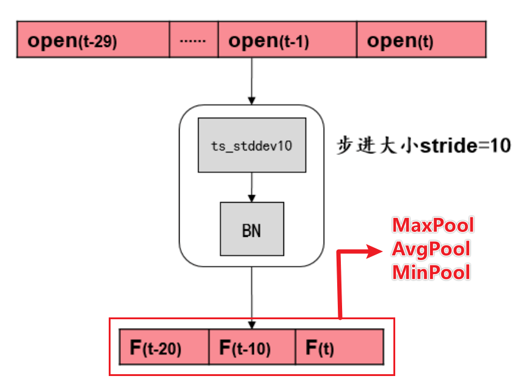
为了保留特征提取层得到的输出本身的时序信息，我们将池化层转换为门控循环单元，它是循环神经网络的一种，可以接受时序输入，并输出带有时序记忆的隐藏状态。
我们自定义的 GRU 层的代码如下。由于特征提取层将得到维数为\(117\times3\)或\(117\times10\)的矩阵，因此我们设定input_size=117。num_layers设为 2。我们需要的输出是带有时序记忆的隐藏状态。最终将得到维数为\(30\)的矩阵。
class GRU(nn.Module):
def __init__(self):
super(GRU, self).__init__()
self.gru = nn.GRU(
input_size=117,
hidden_size=30,
num_layers=2,
batch_first=True,
bidirectional=False,
)
def forward(self, data):
# N*time_step*117 -> output: torch.Size([1000, time_step, 30]), hn: torch.Size([2, 1000, 30]), 对于 Inception1, time_step=3, 对于 Inception2, time_step=10
output, hn = self.gru(data)
h = hn[-1:] # 使用最后一层 hidden state 的输出，h: torch.Size([1, 1000, 30])
data = h.squeeze(0) # torch.Size([1000, 30])
return data # torch.Size([1000, 30])
将 GRU 层嵌入到自定义的Inception类中：
class Inception(nn.Module):
"""
Inception, 用于提取时间序列的特征，具体操作包括：
1. kernel_size 和 stride 为 d=10 或 3 的特征提取层，类似于卷积层，用于提取时间序列的特征。具体包括：（下面以 d=10 为例）
1. ts_corr4d: 过去 d 天 X 值构成的时序数列和 Y 值构成的时序数列的相关系数
2. ts_cov4d: 过去 d 天 X 值构成的时序数列和 Y 值构成的时序数列的协方差
3. ts_stddev4d: 过去 d 天 X 值构成的时序数列的标准差
4. ts_zscore4d: 过去 d 天 X 值构成的时序数列的平均值除以标准差
5. ts_return4d: (X - delay(X, d))/delay(X, d)-1, 其中 delay(X, d) 为 X 在 d 天前的取值
6. ts_decaylinear4d: 过去 d 天 X 值构成的时序数列的加权平均值，权数为 d, d – 1, …, 1（权数之和应为 1，需进行归一化处理），其中离现在越近的日子权数越大
7. ts_mean4d: 过去 d 天 X 值构成的时序数列的平均值
各操作得到的张量维数：
1. 由于涉及两个变量的协方差，因此 ts_corr4d 和 ts_cov4d 的输出为 N*1*36*3
2. 其余操作均只涉及单变量的时序计算，因此输出为 N*1*9*3
2. 对第 1 步的输出进行 Batch Normalization 操作，输出维数仍为 N*1*36*3 或 N*1*9*3
3. 对第 2 步的输出，在 H 维度上拼接，输出维数为 N*1*(2*36+5*9)*3 = N*1*117*3
4. 对第 3 步的输出，使用 GRU 进行特征提取，输出维数为 N*30
"""
def __init__(self, combination, combination_rev, index_list):
"""
combination: 卷积操作时需要的两列数据的组合
combination_rev: 卷积操作时需要的两列数据的组合，与 combination 相反
index_list: 卷积操作时需要的时间索引
"""
super(Inception, self).__init__()
# 卷积操作时需要的两列数据的组合
self.combination = combination
self.combination_rev = combination_rev
# 卷积操作时需要的时间索引
self.index_list = index_list
# 卷积操作后的 Batch Normalization 层
self.bc1 = nn.BatchNorm2d(1)
self.bc2 = nn.BatchNorm2d(1)
self.bc3 = nn.BatchNorm2d(1)
self.bc4 = nn.BatchNorm2d(1)
self.bc5 = nn.BatchNorm2d(1)
self.bc6 = nn.BatchNorm2d(1)
self.bc7 = nn.BatchNorm2d(1)
# GRU 层
self.GRU = GRU()
def forward(self, data):
"""
data: 输入的数据，维度为 batch_size*1*9*30
"""
# 本层的输入为 batch_size*1*9*30, 在训练时不需要反向传播，因此可以使用 detach() 函数
data = data.detach().cpu().numpy()
combination = self.combination
combination_rev = self.combination_rev
# 卷积操作
conv1 = self.ts_corr4d(data, combination, combination_rev).to(torch.float)
conv2 = self.ts_cov4d(data, combination, combination_rev).to(torch.float)
conv3 = self.ts_stddev4d(data).to(torch.float)
conv4 = self.ts_zcore4d(data).to(torch.float)
conv5 = self.ts_return4d(data).to(torch.float)
conv6 = self.ts_decaylinear4d(data).to(torch.float)
conv7 = self.ts_mean4d(data).to(torch.float)
# 卷积操作后的 Batch Normalization
batch1 = self.bc1(conv1)
batch2 = self.bc2(conv2)
batch3 = self.bc3(conv3)
batch4 = self.bc4(conv4)
batch5 = self.bc5(conv5)
batch6 = self.bc6(conv6)
batch7 = self.bc7(conv7)
# 在 H 维度上进行特征拼接
feature = torch.cat(
[batch1, batch2, batch3, batch4, batch5, batch6, batch7], axis=2
) # N*1*(2*36+5*9)*3 = N*1*117*3
# GRU 层
feature = feature.squeeze(1) # N*1*117*3 -> N*117*3
feature = feature.permute(0, 2, 1) # N*117*3 -> N*3*117
feature = self.GRU(feature) # N*3*117 -> N*30
return feature
使用torchsummary包查看网络结构¶
test = AlphaNet(combination, combination_rev, index_list_1, index_list_2, fc_num=60)
summary(test, input_size=(1, 9, 30))
----------------------------------------------------------------
Layer (type) Output Shape Param #
================================================================
BatchNorm2d-1 [-1, 1, 36, 3] 2
BatchNorm2d-2 [-1, 1, 36, 3] 2
BatchNorm2d-3 [-1, 1, 9, 3] 2
BatchNorm2d-4 [-1, 1, 9, 3] 2
BatchNorm2d-5 [-1, 1, 9, 3] 2
BatchNorm2d-6 [-1, 1, 9, 3] 2
BatchNorm2d-7 [-1, 1, 9, 3] 2
GRU-8 [[-1, 3, 30], [-1, 2, 30]] 0
GRU-9 [-1, 30] 0
Inception-10 [-1, 30] 0
BatchNorm2d-11 [-1, 1, 36, 10] 2
BatchNorm2d-12 [-1, 1, 36, 10] 2
BatchNorm2d-13 [-1, 1, 9, 10] 2
BatchNorm2d-14 [-1, 1, 9, 10] 2
BatchNorm2d-15 [-1, 1, 9, 10] 2
BatchNorm2d-16 [-1, 1, 9, 10] 2
BatchNorm2d-17 [-1, 1, 9, 10] 2
GRU-18 [[-1, 10, 30], [-1, 2, 30]] 0
GRU-19 [-1, 30] 0
Inception-20 [-1, 30] 0
Linear-21 [-1, 1] 61
================================================================
Total params: 89
Trainable params: 89
Non-trainable params: 0
----------------------------------------------------------------
Input size (MB): 0.00
Forward/backward pass size (MB): 0.17
Params size (MB): 0.00
Estimated Total Size (MB): 0.17
----------------------------------------------------------------
不知道为什么，这里的 GRU 层并没有显示待估计的参数，实际上 GRU 层也是需要估计非常多的参数的。
在 2 个特征提取层及 GRU 层后，将输出展平后拼接，得到\(60\times1\)的矩阵，直接连接到预测目标即可输出预测值，这样就构建了 AlphaNet-V3。
使用TensorBoard查看网络结构¶
我们可以使用TensorBoard对模型进行可视化，主要代码如下。
from tensorboardX import SummaryWriter # 用于进行可视化
from torchviz import make_dot
sample_data = torch.rand(1000, 1, 9, 30)
# 1. 来用 tensorflow 进行可视化
with SummaryWriter("./log", comment="sample_model_visualization") as sw:
sw.add_graph(alphanet, sample_data)
# 2. 保存成 pt 文件后进行可视化
torch.save(alphanet, "./log/alphanet_v3_gru.pt")
# 3. 使用 graphviz 进行可视化
out = alphanet(sample_data)
g = make_dot(out)
g.render("alphanet_v3_gru", view=False) # 这种方式会生成一个 pdf 文件
在TensorBoard中，查看网络结构如下。由于特征提取层的运算符函数太多，且有两个步长不同的的平行的特征提取层，若全部展开则宽度太大，因此这里只展开其中一个。
训练和测试模型¶
相比 AlphaNet-V1，AlphaNet-V3 加入了步长stride=3的特征提取层、将池化层转换为保留时序信息的 GRU 层，模型变得更复杂。在训练模型时，训练 20 轮以上才显现出收敛的趋势。因此我们将epoch_num设为 30。
epoch_num = 30
train_loss_list = []
test_loss_list = []
best_test_epoch, best_test_loss = 0, np.inf
for epoch in range(1, epoch_num + 1):
train_loss, test_loss = 0, 0
# 在训练集中训练模型
alphanet.train() # 关于。train() 的作用，可以参考 https://stackoverflow.com/questions/51433378/what-does-model-train-do-in-pytorch
train_batch_num = 0
for data, label in tqdm(train_loader, f"Epoch {epoch}-train", leave=False):
train_batch_num += 1
# 准备数据
data, label = data.to(torch.float), label.to(torch.float)
# 得到训练集的预测值
out_put = alphanet(data)
# 计算损失
loss = criterion(out_put, label)
# 将损失值加入到本轮训练的损失中
train_loss += loss.item()
# 梯度清零
optimizer.zero_grad() # 关于。zero_grad() 的作用，可以参考 https://stackoverflow.com/questions/48001598/why-do-we-need-to-call-zero-grad-in-pytorch
# 反向传播求解梯度
loss.backward()
# 更新权重参数
optimizer.step()
# 测试模式
alphanet.eval()
test_batch_num = 0
with torch.no_grad():
for data, label in tqdm(test_loader, f"Epoch {epoch}-test ", leave=False):
test_batch_num += 1
data, label = data.to(torch.float), label.to(torch.float)
# 得到测试集的预测值
y_pred = alphanet(data)
# 计算损失
loss = criterion(y_pred, label)
# 将损失值加入到本轮测试的损失中
test_loss += loss.item()
train_loss_list.append(train_loss / train_batch_num)
test_loss_list.append(test_loss / test_batch_num)
绘制训练集和测试集上损失的变化¶
# 画出损失函数的变化
fig = plt.figure(figsize=(9, 6))
# 字号
plt.rcParams["font.size"] = 16
ax = fig.add_subplot(111)
ax.plot(train_loss_list, "r", label="train loss")
ax.plot(test_loss_list, "b", label="test loss")
# 设置 y 轴范围
ax.set_ylim(bottom=0, top=0.1)
ax.legend()
ax.set(xlabel="Epoch")
ax.set(ylabel="MSE Loss")
plt.show()
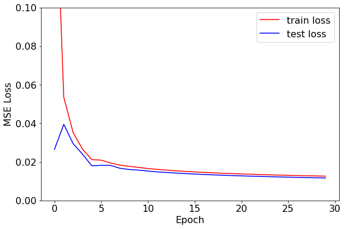
经过测试发现，训练集和验证集在训练 20 轮左右就已经收敛，损失已不再下降。为了探究模型给出了什么样的预测值，我们接下来比较部分样本标签的预测值和真实值。
预测值和真实值的比较¶
为方便查看，我们截取最后一批训练样本的前 200 个样本，对比模型的预测标签值和真实标签值。
# 绘制部分预测值和真实值
y_pred = y_pred.detach().numpy()
label = label.detach().numpy()
# 截取部分数据
part = range(0, 200)
plt.plot(y_pred[part], label="pred")
plt.plot(label[part], label="true")
plt.legend()
plt.show()
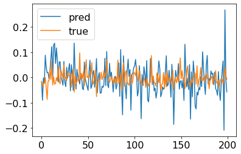
AlphaNet-V3 的模型结构更复杂，输出的预测值并不全是常数，可以作为对收益率的预测值。
但我们也可以注意到 AlphaNet-V3 给出的收益率预测值的波动明显比真实值的波动更大，从这一点上看，预测效果并不是很理想。这可能是因为预测收益率的具体数值的难度较大，我们后续考虑将预测目标转换为收益率的方向（即个股在未来 10 个交易日的价格涨跌），以及超额收益的方向（即个股在未来 10 个交易日的收益率相对截面平均收益率的大小）。
调整预测目标：收益率的方向¶
为了调整预测目标，将回归问题转换为二分类问题，我们需要在代码中作如下的调整。
将预测标签转换为 0 和 1¶
# 由于是分类问题，因此将 y 大于 0 的标签设置为 1，小于 0 的标签设置为 0
trainy[trainy > 0] = 1
trainy[trainy < 0] = 0
testy[testy > 0] = 1
testy[testy < 0] = 0
全连接层最后的激活函数设为sigmoid，使得最终输出在 0 到 1 之间¶
def forward(self, data):
data_1 = self.Inception_1(data) # N*30
data_2 = self.Inception_2(data) # N*30
pool_cat = torch.cat([data_1, data_2], axis=1) # N*60
# 输出层
data = self.fc(pool_cat)
# 激活函数，使输出值在 0 到 1 之间
data = torch.sigmoid(data)
data = data.to(torch.float)
return data
损失函数设为Binary Cross Entropy¶
在回归问题中，我们使用的损失函数为均方误差 MSE。在二分类问题中，适合使用BCELoss()，即 Binary Cross Entropy Loss 二元交叉熵。
绘制训练集和测试集上损失的变化¶
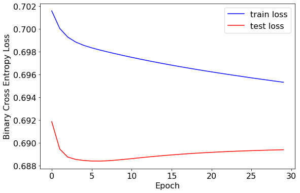
训练集和测试集的损失值较为接近，均在 0.69 左右。训练轮次在 5 轮左右时效果较好。
预测值和真实值的比较¶
ROC 曲线¶
对于二分类问题，我们可以绘制 ROC 曲线来评价预测效果。
# 绘制 ROC 曲线
fpr, tpr, thresholds = metrics.roc_curve(label, y_pred)
plt.plot(fpr, tpr, color="darkorange", lw=2, label="ROC curve")
plt.plot([0, 1], [0, 1], color="navy", lw=2, linestyle="--")
plt.xlabel("False Positive Rate")
plt.ylabel("True Positive Rate")
plt.title("ROC Curve")
plt.legend(loc="lower right")
plt.show()
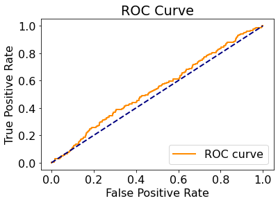
可以看到，ROC 曲线仅略高于次对角线，说明预测效果仅略高于基于样本正负比率的随机猜测。
混淆矩阵¶
我们可以绘制混淆矩阵，查看正负例样本的预测情况。
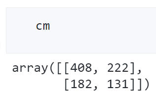
import seaborn as sn
plt.figure(figsize=(10, 8))
sn.heatmap(cm, annot=True, cmap="Blues", fmt="d")
plt.xlabel("y_pred")
plt.ylabel("y_true")
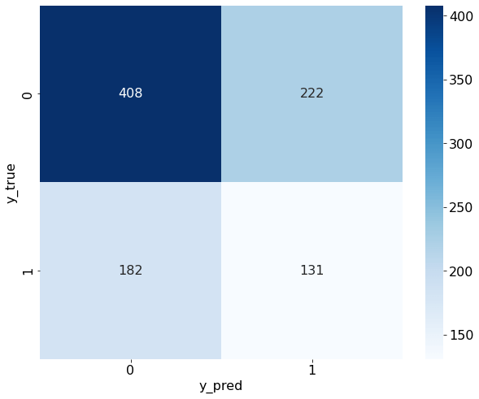
从混淆矩阵中可以看出，预测结果确实和真实数据中的正负比例很接近，说明我们的预测结果确实近似于基于样本数据的“随机猜测”。
这在信噪比极低的金融领域是可以理解的，我们的模型只用到了简单的量价数据，在生成涨跌信号的准确度上并不应奢求能获得非常好的预测效果。
调整预测目标：超额收益率的方向¶
由于市场存在不可分散的系统性风险，个股的收益率数值通常受市场环境的影响很大。在积极组合管理领域，投资者更希望找到能够打败市场、具有超额收益的个股。因此我们再次调整预测目标为个股在 10 个交易日后的超额收益的正负值。
将预测标签转换为超额收益率的正负¶
需要先计算截面的收益率均值，再根据个股收益率相对于截面收益率的大小，确定超额收益率的正负，并以此作为预测目标。
由于我们的样本并没有包含全市场的所有个股，因此这样的计算会有偏差。
# 由于是超额收益的分类问题，因此将 y 大于 trainy.mean() 的标签设置为 1，小于 trainy.mean() 的标签设置为 0
train_mean_y = trainy.mean().item()
trainy[trainy > train_mean_y] = 1
trainy[trainy < train_mean_y] = 0
test_mean_y = testy.mean().item()
testy[testy > test_mean_y] = 1
testy[testy < test_mean_y] = 0
其他代码基本与“预测收益率的方向”一致，在此不再赘述。
绘制训练集和测试集上损失的变化¶
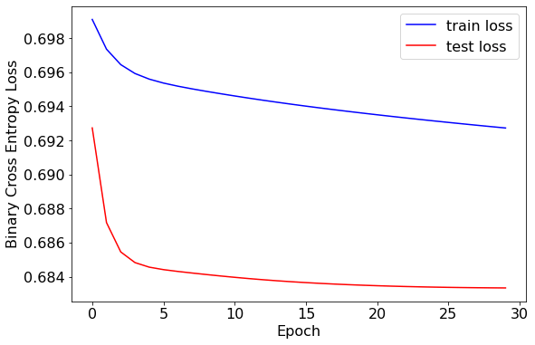
损失值得结果与“预测收益率的方向”相比略有下降，或许说明模型在预测超额收益率的方向上表现更好。
预测值和真实值的比较¶
ROC 曲线¶
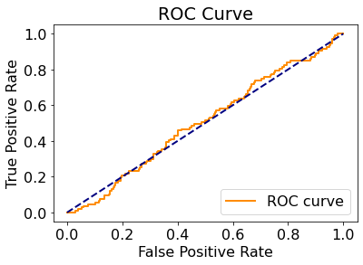
混淆矩阵¶
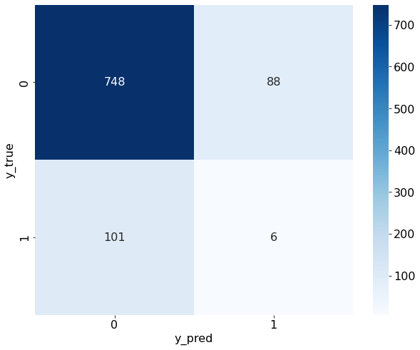
尽管我们做了多种尝试，但发现 ROC 曲线和混淆矩阵的表现依旧一般，模型在分类准确率上效果并不理想。
将随机森林模型作为 baseline 进行比较¶
我们的特征均为量价数据，个股在每一天有\(9\times30=270\)个特征。随机森林模型在训练时并不会用到全部特征，而是会随机抽取样本和特征。作为基准模型，我们不进行额外的特征工程，也不刻意调整模型参数，仅将基准结果与前面构造的 AlphaNet-V3 进行比较。
我们以“超额收益率的方向”作为预测目标，前文已经介绍过了 AlphaNet-V3 的预测效果，这里我们介绍随机森林模型进行分类预测的过程。
在前面的神经网络中，我们的输入数据是\(9\times30\)的矩阵，在随机森林模型中，我们需要将二维矩阵展平，再输入到模型中。
# 读取数据
X_train = np.load("../data/X_train.npy")
# # 将数据转换为二维
X_train = X_train.reshape(X_train.shape[0], -1)
y_train = np.load("../data/y_train.npy")
X_test = np.load("../data/X_test.npy")
# 将数据转换为二维
X_test = X_test.reshape(X_test.shape[0], -1)
y_test = np.load("../data/y_test.npy")
# 查看数据的大小
print("训练集特征维数：", X_train.shape)
print("训练集标签维数：", y_train.shape)
print("测试集特征维数：", X_test.shape)
print("测试集标签维数：", y_test.shape)
# 由于是超额收益的分类问题，因此将 y 大于 y_train.mean() 的标签设置为 1，小于 y_train.mean() 的标签设置为 0
train_mean_y = y_train.mean()
y_train[y_train > train_mean_y] = 1
y_train[y_train < train_mean_y] = 0
test_mean_y = y_test.mean()
y_test[y_test > test_mean_y] = 1
y_test[y_test < test_mean_y] = 0
训练和测试模型¶
# 构建随机森林模型
clf = RandomForestClassifier(random_state=0, n_jobs=-1)
clf.fit(X_train, y_train)
# 在测试集上预测
y_pred = clf.predict(X_test)
y_pred_proba = clf.predict_proba(X_test)[:, 1]
输出模型评价指标的函数¶
# 在测试集上给出模型分类的效果
def evaluate(true, pred):
print("accuracy:{:.2%}".format(metrics.accuracy_score(true, pred)))
print("precision:{:.2%}".format(metrics.precision_score(true, pred)))
print("recall:{:.2%}".format(metrics.recall_score(true, pred)))
print("f1-score:{:.2%}".format(metrics.f1_score(true, pred)))
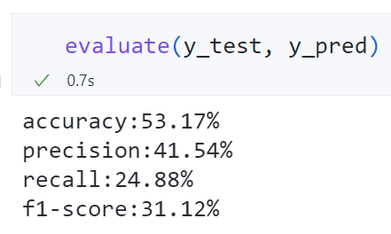
精确率、召回率均较低，基准模型的表现也不好。
特征重要性排序¶
随机森林模型可以基于信息增益对特征重要性进行排序。
在代码中，需要为展平后的 270 个特征设定名称。
# 为 270 个特征设定名字
feature_names = [
"open",
"high",
"low",
"close",
"vwap",
"volume",
"return1",
"turn",
"free_turn",
]
time = range(29, -1, -1)
all_feature_names = []
for i in feature_names:
for j in time:
all_feature_names.append(i + "_" + str(j))
feat_importances = pd.Series(clf.feature_importances_, index=all_feature_names)
# 将特征重要性排序后绘图
ax = feat_importances.sort_values()[250:].plot(kind="barh", figsize=(12, 6))
# 设置横坐标格式
ax.xaxis.set_major_formatter(plt.FuncFormatter(lambda x, pos: "{:.2%}".format(x)))
# 设置标题
ax.set_title("Importance of Features")
# 如果不需要显示特征重要性的大小数值，可以使用下面 2 行代码
# for container in ax.containers:
# ax.bar_label(container)
# 如果需要显示特征重要性的大小数值，可以使用下面的代码
x_offset = 0
y_offset = 0
for p in ax.patches:
b = p.get_bbox()
val = "{:.2%}".format(b.x1)
ax.annotate(val, (b.x1 + 0.0002, b.y1 - 0.4))
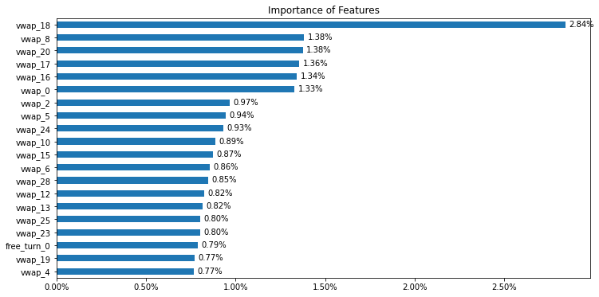
最重要的特征几乎都为vwap，说明基于成交量的加权价格可能是预测超额收益的重要因素。
ROC 曲线¶
# 绘制 ROC 曲线
fpr, tpr, thresholds = metrics.roc_curve(y_test, y_pred_proba)
plt.plot(fpr, tpr, color="darkorange", lw=2, label="ROC curve")
plt.plot([0, 1], [0, 1], color="navy", lw=2, linestyle="--")
plt.xlabel("False Positive Rate")
plt.ylabel("True Positive Rate")
plt.title("ROC Curve")
plt.legend(loc="lower right")
plt.show()
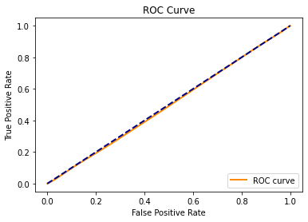
混淆矩阵¶

ROC 曲线几乎和次对角线重合，混淆矩阵的分类准确率、召回率都不高，说明在随机森林模型上的预测效果同样不佳。
总结和结论¶
本文主要实现了：
- 基于个股在过去 30 个交易日的 9 个量价数据，构造“图片”矩阵，作为 AlphaNet 的输入数据。
- 构造自定义的特征提取层，实现 2 种基于双变量的特征提取层和 5 种基于单变量的特征提取层。
- 以 10 为步长，将自定义的特征提取层与批标准化层、最大（平均、最小）池化层、全连接层结合，以均方误差 MSE 为损失函数，输出收益率值的预测目标。
- 在训练集和验证集上做检验，发现可能是由于模型过于简单，损失值很快收敛，且预测值几乎都为常数。为此做了一些改进。
- 改进 1：将池化层替换为门控循环单元（GRU）。改进后的预测结果能给出不同的收益率值，但波动率明显比真实值更大。
- 改进 2：调整预测目标为收益率和方向和超额收益的方向。将全连接层的激活函数设为
sigmoid，损失函数设为Binary Cross Entropy，对测试集上的预测效果进行评估，发现 ROC 曲线和混淆矩阵都接近随机猜测。 - 与基 Baseline 随机森林模型进行比较。我们将随机森林模型应用于对个股在未来 10 个交易日的超额收益的预测，发现
vwap是最重要的特征。但模型评价指标也告诉我们很难准确地预测超额收益率的方向。
未来研究方向¶
虽然本文测试的几个模型均算不上理想，但这或许就是金融市场的特点：低信噪比、难以预测。在开始进行这个项目前，我也并不期待能搭建出预测准确率高得惊人的模型。在回顾模型是如何构建的同时，我也想到了未来可以继续拓展的方向：
- 扩充特征数据。本文只用到了 9 个量价数据，且都是日频的数据。在高频领域可以构造出更多的分钟频甚至更高频的特征数据。对于数据结构与本文相似的特征，AlphaNet 都可以接受作为输入。更多的特征数据也意味着更多解释收益率的可能性，也许能提高模型的预测效果。
- 进一步调整模型结构和参数。由于前期搭建的模型表现并不理想，且研究时间有限，我并没有花费大量时间进行参数调优，只是参考了原始研究报告中的参数。模型中的步长、GRU 层数、全连接层的设计、Dropout rate 等，都可以进行参数寻优，或许能取得更好的效果。
- 使用更大量的数据进行训练。由于数据的可得性，本文下载 15000 余个样本数据耗时 3 个多小时。在有充足的数据来源的情况下，可以考虑对更大量的样本进行训练和测试。
参考资料和个人贡献¶
参考资料¶
-
本文的研究思路来自华泰证券研究所金融工程组的两篇研究报告：《华泰人工智能系列之三十二-AlphaNet：因子挖掘神经网络》 和 《华泰人工智能系列之三十四 - 再探 AlphaNet：结构和特征优化》。这两篇报告介绍了如何借鉴卷积神经网络 CNN 和门控循环单元 GRU 的思想，搭建基于量价数据进行因子挖掘的神经网络。我使用的模型参数也是基于研究报告中给出的。
-
本文获取数据和构造运算符函数的方法参考了知乎的回答：如何实现用遗传算法或神经网络进行因子挖掘？
个人贡献（以下成果均为原创）¶
-
对参考代码码进行了逐行测试，确保理解源代码的作用，并尽可能详尽地添加了注释（例如输入数据在神经网络中的每一个阶段的维数变化，在注释中均有标明）。
-
精简了参考代码中的冗余部分，例如将两个 Inception 类合并成一个统一的类，通过输入不同的
index_list来实现不同步长的特征提取层。 - 添加了步长
stride=3的特征提取层。 - 构造了改进后使用门控循环单元（GRU）替换池化层的代码，并测试了数据在这一阶段的维数变化。
- 使用
torchsummary包和TensorBoard查看网络结构。 - 调整了预测目标为收益率和超额收益的方向，完成了对模型的评价、预测值和真实值的比较。
- 添加了随机森林模型作为基准模型的模型表现，与 AlphaNet 进行了对比。
收获与致谢¶
我想做这个课题的动机是：自定义的特征提取层借鉴了课内学的 CNN 的思想，并且提取出的这些特征本身具有逻辑。面对时序信息，也有 LSTM、GRU 这类循环神经网络的组件可以搭配使用。当拥有海量特征数据时，使用神经网络进行数据挖掘是一种高效、快捷的方法。虽然最终没有实现预测效果极好的模型，但我也收获了很多新的知识和经验：
-
对课内所学的知识有了更深的理解。在选题阶段，我希望所做的东西尽量与课内所学相关，不要超出自己的认知太多，或者自学起来不要花费太久，否则我自己都不能理解我的模型在做什么。我参考的研究报告中使用了类似卷积神经网络的特征提取层，我觉得和课内学的知识很相似，自己也能够理解并用代码实现它。在加入批标准化层、门控循环单元（GRU）时，我自学了一些教程文档、教学视频，更加理解了它们的原理和实现方法。
-
熟悉了使用 PyTorch 搭建神经网络的流程。在这个大作业之前，我应用深度学习的经验仅限课内个人作业 3 中使用 Keras 搭建过情绪识别的卷积神经网络。我看到业界有很多量化研究岗位要求应聘者会使用 PyTorch，因此我想学习使用 PyTorch 来搭建一个神经网络模型。在这次作业中，我体会了构造数据、自定义层、构建模型、输出模型结构、载入数据、训练和测试数据的整个流程，对我的实践经历是极大的丰富。
- 对量化研究有了更多的思考。在实践之前，我不知道神经网络究竟能为量化研究带来多大的作用。我对预测结果有些期待，但最后效果不佳，我更理解了金融领域的低信噪比、难以预测的特点。自己动手实现了 AlphaNet 的想法，并检验了它的效果，我更明白了简单的量价指标和预测模型很难取得长久的正收益。
感谢两位老师和助教学长这学期的辛勤付出，也感谢 DS&BA 项目组将大数据技术这门课调整到研一第一学期讲授。虽然时间比较紧，但学到的理论和实践经历都是很丰富的，这为我们在业界求职带来了很多帮助。